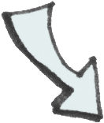
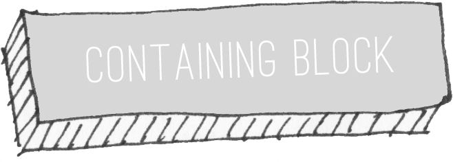
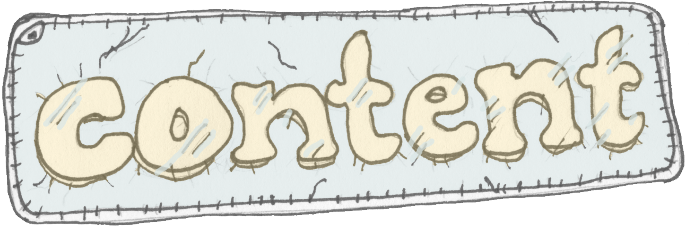
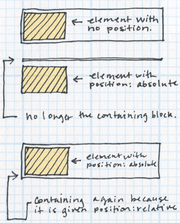
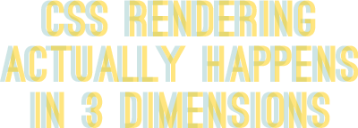
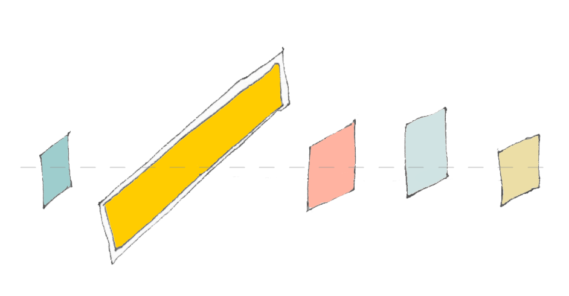

- Absolutely positioned elements have no effect on the parent element or
elements that come after them in the source code.

- Will overlap other content unless you take action to prevent it.
- Fixed elements will stay in exactly the same place inside the browser window,
even when the page is scrolled.
- Fixed is just a specialized form of absolute.

def: “The block box that the position and dimensions of the absolutely
positioned box are relative to.”
Setting position:relative makes that element the containing block
for any absolutely positioned descendant/child element.
An absolutely positioned element without a positioned parent makes the
html element the “initial containing block”.
-
Look at the parent element of the absolutely positioned element—does that
element’s position property have one of the values relative, absolute or fixed?
- If so, you’ve found the containing block.
-
If not, move to the parent’s parent element and repeat from step 1 until you
find the containing block or run out of ancestors.
-
If you’ve reached the html element without finding a positioned ancestor, then
the containing block is the html element.
Absolutely positioned elements will shrink-wrap to fit their contents unless
you specify the dimensions.

Set the left and right or width properties to specify a width &
top and bottom or height to specify the height.
Using percentages makes the elements relative to the dimensions of the containing block.
Setting position:absolute on a child element of a containing block, when the containing
block has no position of it's own, takes the absolutely positioned element out of the flow.

The browser then becomes the parent element.

-
+ Higher “z” values are “in front of” lower “z” values.
-
- Negative “z” values position “behind”.
-
Elements with a stacking context have the same point of reference along the z axes.
z-index values can be:
-
an integer, (negative or positive)
-
auto, or
-
inherit.
When there are two elements with the same stacking context and same stack level; the one that occurs
later will appear on top.
The Rendering order is as follows:
-
Background and Borders
-
Positioned Descendants with negative stack levels.
-
Block-level descendants in the normal flow.
-
Floated descendants.
-
Inline-level descendants in the normal flow.
-
Positioned descendants with stack level auto or 0.
-
Positioned descendants with positive stack level.
